Trong dây chuyền sản xuất của Apple, hệ thống thị giác được sử dụng cho các dự án căn chỉnh, dẫn hướng robot,... bao gồm camera và đèn chiếu sáng. Khi lắp đặt camera và đèn trên dây chuyền, cần phải lấy mẫu từ máy mẫu, sau đó sử dụng vị trí lắp đặt của camera và đèn trên máy mẫu làm tham chiếu để sao chép sang các máy khác trên dây chuyền. Các thông số cần sao chép bao gồm: vị trí và tư thế lắp đặt của camera và đèn, thông số thiết lập của camera và độ sáng của đèn. Mỗi máy đều cần tham khảo kết quả lắp đặt của máy mẫu, vì vậy cần phải sao chép thông tin mẫu một cách hiệu quả và chính xác trên các máy khác. Tuy nhiên, quá trình sao chép có thể do người có ít kinh nghiệm thực hiện. Do đó, cần có một công cụ thiết lập thị giác, giúp quá trình sao chép được lập trình hóa, có thể kiểm tra được kết quả lắp đặt thị giác, hỗ trợ kỹ sư AE/kỹ sư dịch vụ khách hàng lắp đặt camera và đèn một cách hiệu quả và chính xác.
Nhấn nút “Ghi lại thiết lập mẫu” trong menu “Tập tin”, như hình dưới:
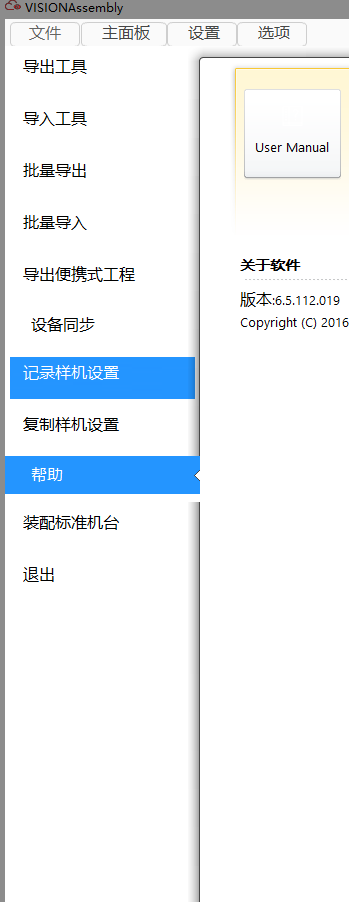
Mở hộp thoại “Ghi lại thiết lập mẫu”, như hình dưới:
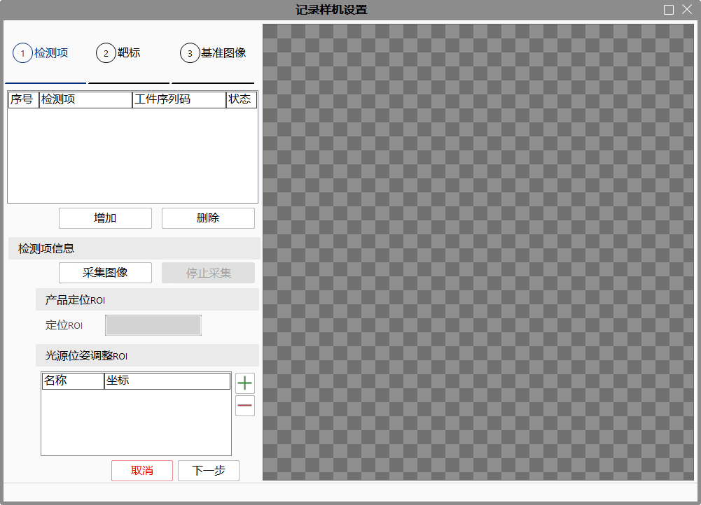
Nhấn nút “Thêm” trong cửa sổ “Ghi lại thiết lập mẫu”, hộp thoại bật lên như hình dưới:
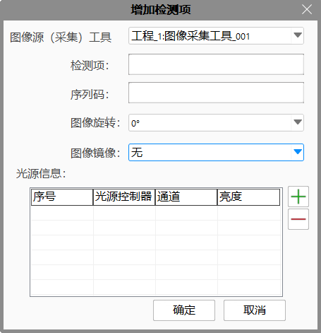
Chọn công cụ nguồn hình ảnh (thu thập) được sử dụng cho hạng mục kiểm tra, chỉnh sửa hạng mục kiểm tra, mã sê-ri, thông tin xoay ảnh và lật ảnh. Nếu hạng mục kiểm tra này sử dụng đèn chiếu sáng, cần chỉnh sửa thông tin đèn. Nhấn nút “+” trong hộp thoại trên để thêm đèn. Người dùng có thể nhấp đúp vào đèn để chỉnh sửa bộ điều khiển đèn, kênh và độ sáng. Kết quả chỉnh sửa như hình dưới:
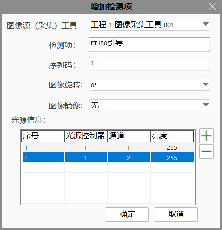
Chọn một đèn, nhấn nút “－” trong hộp thoại trên để xóa đèn, như Hình 1-5 dưới đây, ví dụ xóa đèn số 2:
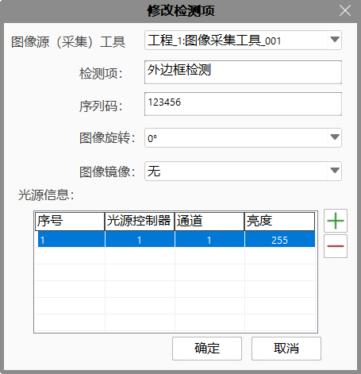
Nhấn nút “OK” trong hộp thoại trên để thêm một hạng mục kiểm tra. Nhấn “Hủy” hoặc nút “×” của hộp thoại để hủy thao tác thêm hạng mục kiểm tra.
Nhấn nút “Thu thập hình ảnh” trong Hình 1-2 để sử dụng công cụ thu thập hiện tại chụp một hình ảnh, đồng thời tạo một vùng “ROI định vị” và một vùng “ROI ánh sáng-1” trên hình ảnh. Nhấn biểu tượng “＋” trong hình trên để thêm hai vùng “ROI điều chỉnh vị trí đèn”, sau đó kéo đến khu vực quan tâm (tùy theo yêu cầu dự án), như Hình dưới:
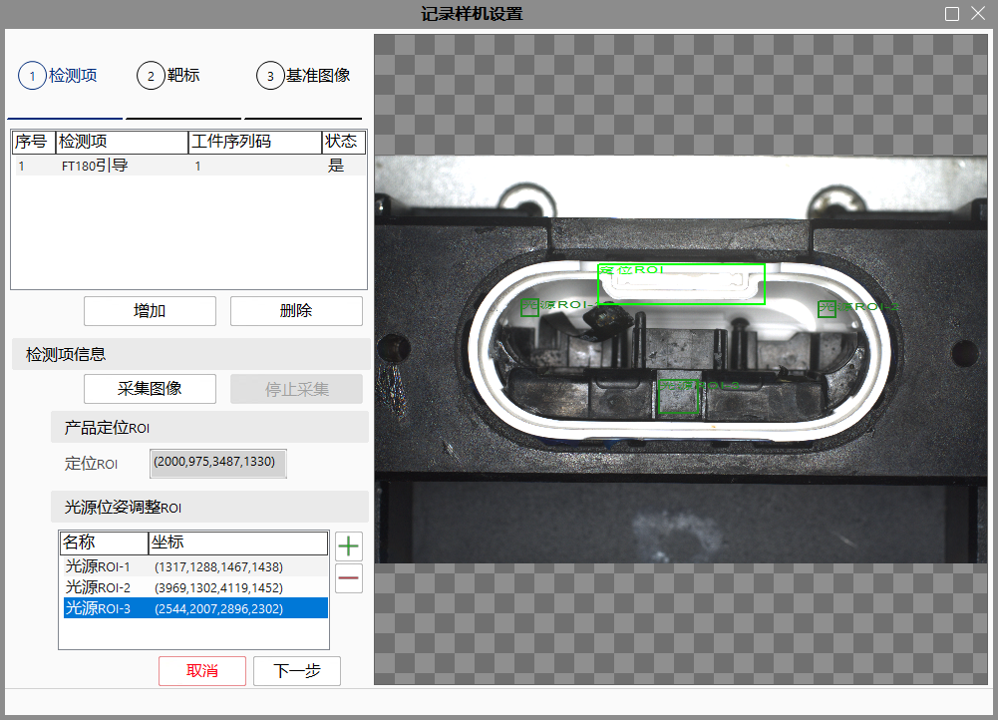
Vùng “ROI định vị” và “ROI ánh sáng-1” có thể kéo thả được. “ROI định vị” dùng để điều chỉnh vị trí cuối cùng của camera trên máy, còn “ROI ánh sáng-1” dùng để điều chỉnh vị trí của đèn cho hạng mục kiểm tra hiện tại. Số lượng tối đa các vùng “ROI ánh sáng” là 5.
Chọn một ROI ánh sáng, nhấn nút “－” để xóa ROI ánh sáng đã chọn. Nhấn nút “Hủy”, sẽ bật ra hộp thoại cảnh báo như hình dưới:
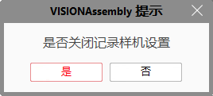
Chọn hạng mục kiểm tra cần xóa trong danh sách, nhấn nút “Xóa”, hộp thoại xác nhận sẽ bật ra như hình dưới:
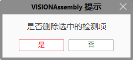
Chọn “Có” để xóa hạng mục đã chọn, chọn “Không” để thoát khỏi cửa sổ xóa. Nhấp đúp vào một hạng mục kiểm tra trong danh sách để mở hộp thoại chỉnh sửa, như hình dưới:
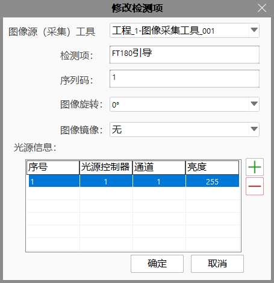
Cách thao tác trong hộp thoại chỉnh sửa tương tự như thao tác trong hộp thoại thêm mới.
Hạng mục kiểm tra dùng để ghi lại vị trí chụp ảnh của máy mẫu. Có bao nhiêu vị trí chụp thì tạo bấy nhiêu hạng mục kiểm tra.
Nhấn nút “Tiếp theo” trong hình trên để vào giao diện thu thập thông tin bia hiệu chuẩn, như hình dưới:
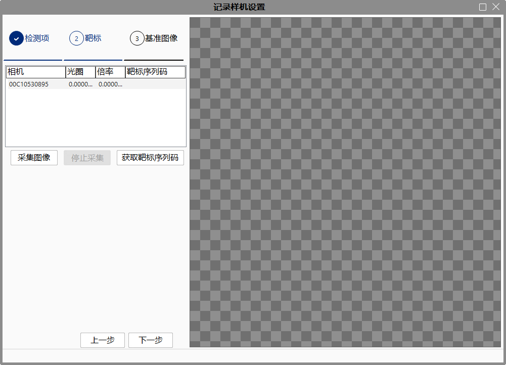
Trong hình trên, danh sách camera hiển thị các camera đang kết nối với máy hiện tại. Nhấp đúp vào một camera để bật hộp thoại chỉnh sửa thông tin bia hiệu chuẩn, như hình dưới:
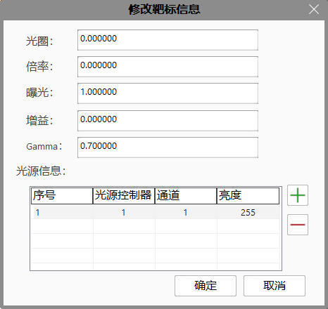
Người dùng có thể chỉnh sửa các thông số hiện tại của camera như khẩu độ, độ phóng đại, thời gian phơi sáng, độ lợi, Gamma và thông tin đèn chiếu sáng.
Nhấn nút “Thu thập hình ảnh” để dùng camera hiện tại chụp hình ảnh. Trong hình dưới, có thể thấy hai vùng là “ROI bia hiệu chuẩn” và “ROI đánh giá chất lượng ảnh”. ROI chất lượng ảnh được dùng để đánh giá chất lượng giữa hình ảnh thu thập được và ROI tương ứng trong mẫu máy. Kéo vùng ROI này đến vị trí bia hiệu chuẩn, nhấn nút “Lấy mã số tuần tự của bia hiệu chuẩn”, kết quả như hình dưới:
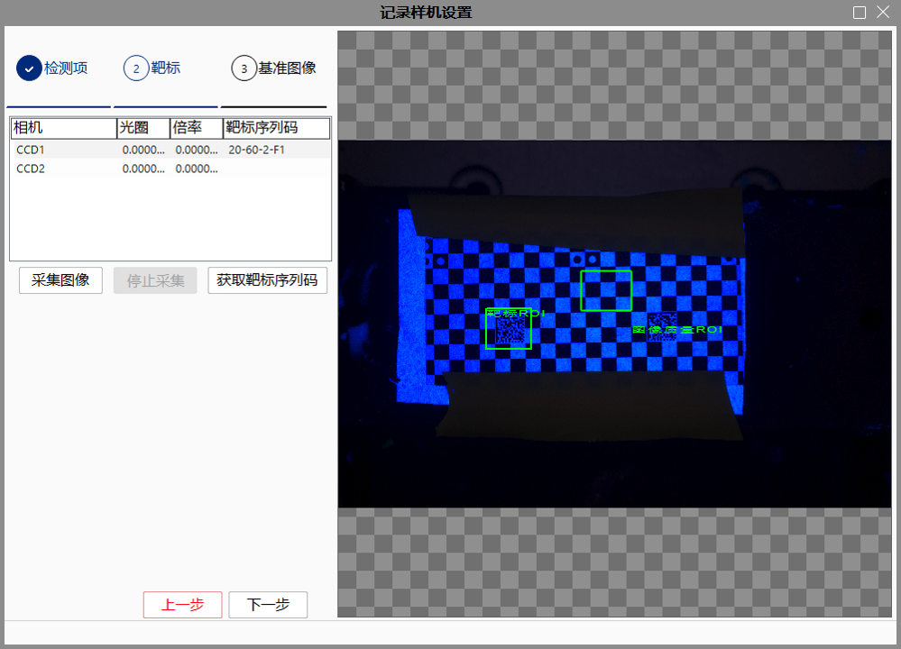
Nhấn lại nút “Thu thập hình ảnh”, hệ thống sẽ hiện thông báo như sau:
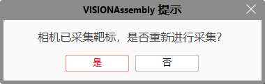
Nhấn “Có” để chụp lại hình ảnh; nhấn “Không” để hủy thao tác chụp lại.
Nhấn nút “Bước trước” để quay lại giao diện thu thập thông tin hạng mục kiểm tra; nhấn “Bước tiếp” để vào giao diện “Hình ảnh chuẩn”.
Nhấn nút “Bước tiếp” ở hình trên để vào giao diện thu thập thông tin hình ảnh chuẩn, như hình dưới:
Các bước thao tác như sau:
Bước 1: Nhấn vào dòng danh sách CCD1;
Bước 2: Chọn hạng mục kiểm tra dưới CCD1;
Bước 3: Nhấn nút “Thu thập hình ảnh chuẩn”;
Bước 4: Kéo vùng ROI_Train trên hình ảnh — vùng ROI này dùng để huấn luyện nên cần đặt tại các đặc trưng cố định của sản phẩm, như hình minh họa;
Bước 5: Thêm 1~12 vùng ROI đánh giá độ sáng (tùy vào yêu cầu dự án), thông thường chỉ cần thêm 3~4 vùng;
Bước 6: Kéo các ROI đánh giá độ sáng vào các vùng quan tâm trên sản phẩm. Các ROI này dùng để so sánh độ sáng với các máy mới, nhằm kiểm tra máy mới có giống mẫu máy hay không. Mục đích chính là điều chỉnh giá trị tỷ lệ cân bằng trắng của máy mới;
Nhấn nút “Bước trước” để quay lại giao diện thu thập thông tin bia hiệu chuẩn; nhấn “Bước tiếp” để vào giao diện “Lưu thông tin mẫu máy”.
Nhấn nút “Hoàn tất” trong giao diện ghi lại cài đặt mẫu máy để vào giao diện lưu thông tin mẫu máy, như hình dưới:
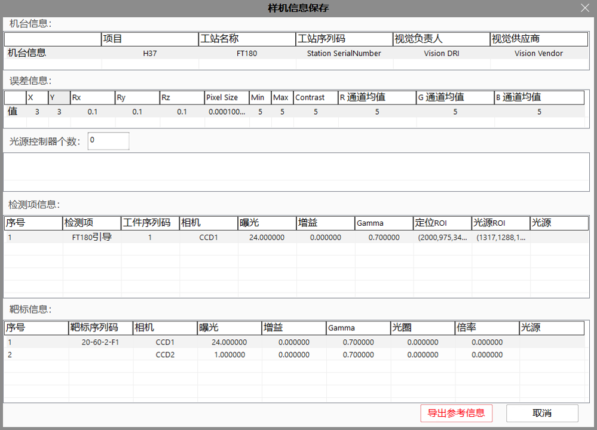
Giải thích các bước thao tác như sau：
Bước 1: Thông tin máy dùng để ghi lại tên dự án, tên công đoạn, mã số công đoạn, người phụ trách thị giác và nhà cung cấp thị giác của máy hiện tại. Điền thông tin theo yêu cầu thực tế của dự án;
Bước 2: X, Y là độ lệch tối đa cho phép (đơn vị: pixel) giữa vị trí chụp của máy mới và mẫu máy;
Bước 3: Rx, Ry, Rz là các góc lệch tối đa cho phép giữa camera của máy mới và mẫu máy;
Bước 4: Min, Max, Contrast là sai số độ sáng tối đa cho phép của các vùng ROI sáng giữa máy mới và mẫu máy, bao gồm: độ sáng nhỏ nhất, lớn nhất và độ tương phản;
Bước 5: Giá trị trung bình kênh R, G, B là độ lệch tối đa cho phép về giá trị trung bình từng kênh màu trong ROI ảnh chuẩn giữa máy mới và mẫu máy;
Bước 6: Nhấn nút “Xuất thông tin tham chiếu” để xuất toàn bộ thông tin chuẩn đã thu thập từ mẫu máy;
Nhấn nút “Hủy” trong hình trên để đóng cửa sổ “Lưu thông tin mẫu máy”. Khi đóng cửa sổ này, mọi thông tin đã chỉnh sửa sẽ bị mất.
Nhấn nút “Xuất thông tin tham chiếu”, hộp thoại lưu tệp sẽ bật lên như hình dưới:
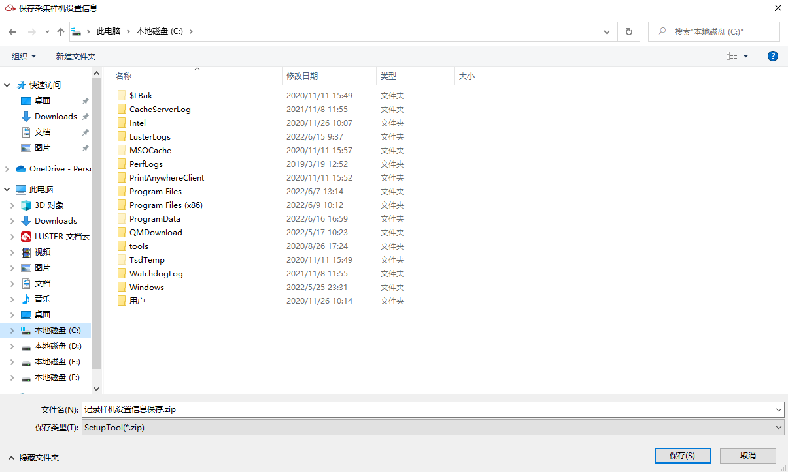
Nhấn nút “Ghi lại cài đặt mẫu máy” trong menu “Tệp”, hộp thoại mở tệp thông tin mẫu máy sẽ bật lên như hình dưới:
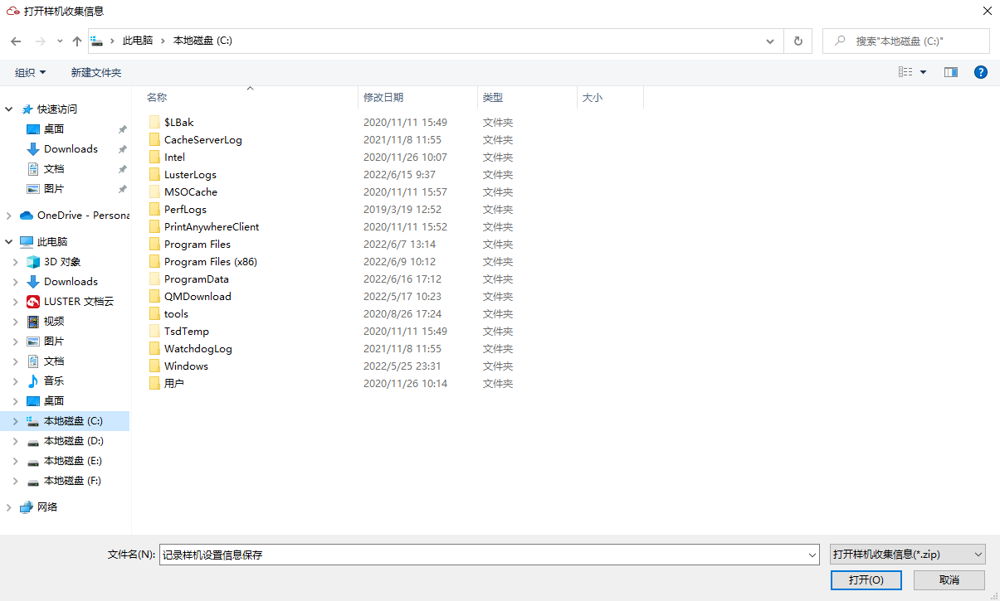
Chọn tệp thông tin mẫu máy đã lưu và nhấn nút “Mở” để nhập dữ liệu tham chiếu.
Sau khi nhập dữ liệu tham chiếu mẫu máy, giao diện sao chép cài đặt mẫu máy sẽ được mở ra. Chọn camera từ danh sách tất cả các camera (đang online) kết nối với máy hiện tại. Hệ thống sẽ hiển thị các thông tin của camera này trên mẫu máy, bao gồm: mã số bia hiệu chuẩn, khẩu độ, độ phóng đại, thời gian phơi sáng, độ lợi, Gamma và các sai số (X, Y, kích thước điểm ảnh, Rx, Ry, Rz), như hình dưới:
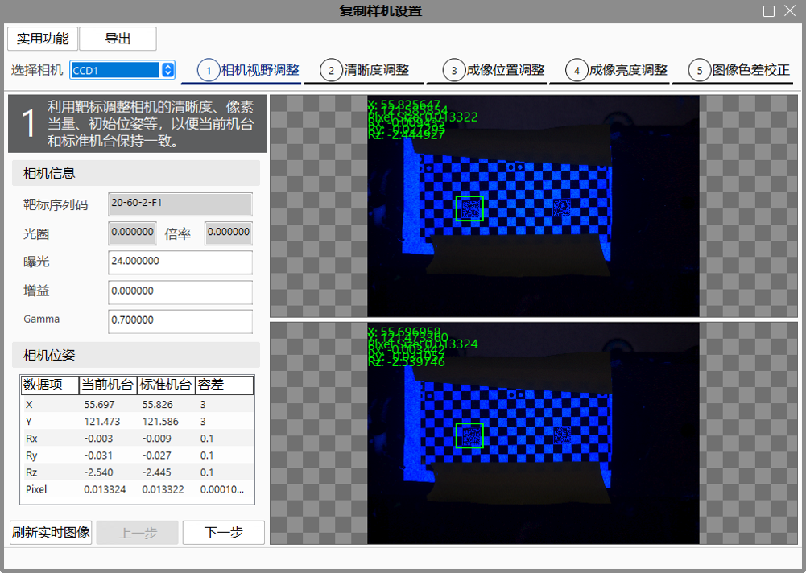
Sau khi nhận diện bia hiệu chuẩn trong ảnh thời gian thực (thành công hoặc thất bại), việc thu ảnh thời gian thực sẽ dừng lại. Nếu cần nhận diện lại bia hiệu chuẩn, cần nhấn nút “Làm mới ảnh thời gian thực”, sau đó nhấn nút “Tiếp theo” để vào giao diện “Điều chỉnh độ nét”.
Nhấn nút “Chức năng tiện ích” để vào giao diện chức năng tiện ích, như Hình 2-3 dưới đây.
Giải thích thông tin trong bảng “Trạng thái gỡ lỗi” như sau (Đạt: nghĩa là sai số tuyệt đối giữa tham số bia hiệu chuẩn thời gian thực và tham số tham chiếu nhỏ hơn hoặc bằng sai số cho phép):
Camera: tên camera;
Sử dụng bia hiệu chuẩn để điều chỉnh tư thế camera: “Có” nghĩa là đã điều chỉnh thành công tư thế camera bằng bia hiệu chuẩn;
Sử dụng sản phẩm để điều chỉnh tư thế camera: “Có” nghĩa là đã điều chỉnh thành công tư thế camera bằng sản phẩm thực tế;
Sử dụng sản phẩm để điều chỉnh đèn chiếu sáng: “Có” nghĩa là đã điều chỉnh thành công đèn chiếu sáng bằng sản phẩm thực tế.
Giải thích thông tin trong bảng “Điều khiển đèn chiếu sáng”:
Bảng kết quả tìm kiếm sẽ hiển thị “Công cụ gửi lệnh giao tiếp” trong dự án đã chỉ định. Nhấn đúp vào công cụ gửi lệnh, công cụ này sẽ được thêm vào danh sách “Công cụ gửi lệnh chờ thực thi”;
Nhấn nút “Thực thi” để thực hiện tất cả các công cụ gửi lệnh trong danh sách.
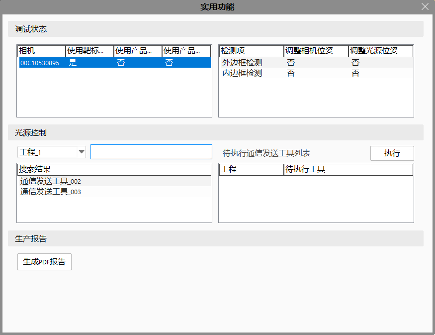
Nhấn nút “Tiếp theo” trong cửa sổ sao chép cài đặt mẫu máy để vào giao diện “Điều chỉnh độ nét”. Trong giao diện này, người dùng có thể xem độ nét và độ tương phản của vùng ROI trong ảnh bia hiệu chuẩn hiện tại so với ảnh bia hiệu chuẩn của máy mẫu. Đồng thời có thể thay đổi ảnh thời gian thực hiện tại của máy mới bằng cách điều chỉnh tỷ lệ kênh cân bằng trắng của camera, từ đó điều chỉnh độ nét và độ tương phản của ảnh bia hiệu chuẩn hiện tại. Xem hình dưới:
Chế độ cân bằng trắng: thiết lập chế độ cân bằng trắng, chỉ có hiệu lực với camera màu LBAS, giá trị có thể là Continuous (liên tục), Once (một lần), Off (tắt);
Tỷ lệ kênh R: thiết lập giá trị tỷ lệ của kênh R trong cân bằng trắng;
Tỷ lệ kênh G: thiết lập giá trị tỷ lệ của kênh G trong cân bằng trắng;
Tỷ lệ kênh B: thiết lập giá trị tỷ lệ của kênh B trong cân bằng trắng;
Lưu kênh: lưu lại tỷ lệ kênh đã chỉ định của camera.
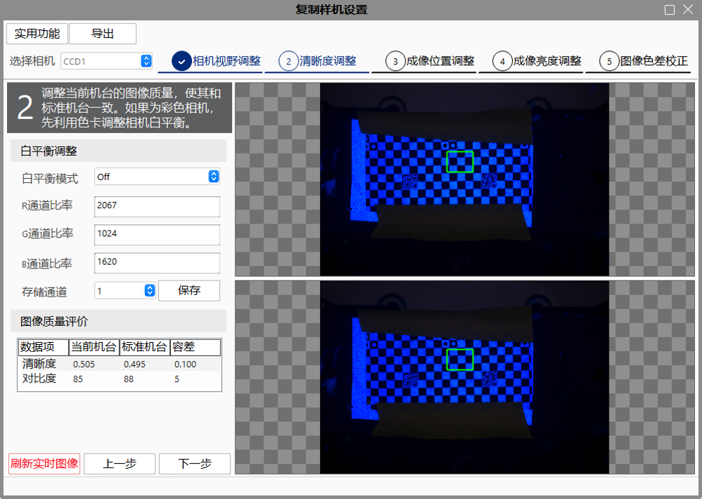
Nhấn nút “Tiếp theo” trong cửa sổ sao chép cài đặt mẫu máy để vào giao diện “Hiệu chỉnh sai lệch màu sắc ảnh”. Trong giao diện này, người dùng có thể chọn “Hạng mục kiểm tra”, tất cả hạng mục là của camera hiện tại đang chờ hiệu chỉnh. Có thể thấy mã sản phẩm và thông tin đèn chiếu tương ứng với từng hạng mục kiểm tra như hình dưới:
Hạng mục kiểm tra: Tên hạng mục kiểm tra, do người dùng tùy chỉnh trong giai đoạn “Ghi lại cài đặt mẫu máy”;
Mã số: Mã số sản phẩm, do người dùng tùy chỉnh trong giai đoạn “Ghi lại cài đặt mẫu máy”;
Xoay camera: Xoay ảnh gốc theo chiều ngược kim đồng hồ với các góc 0°, 90°, 180° và 270°;
Gương ảnh camera: Thực hiện gương ảnh đối với ảnh gốc, có bốn chế độ: không, ngang, dọc và cả ngang lẫn dọc;
Phơi sáng: Thời gian phơi sáng của camera, đơn vị: mili giây (ms);
Khuếch đại (Gain): Mức khuếch đại của camera, đơn vị: decibel (dB);
Gamma: Dùng để điều chỉnh độ tương phản của camera;
Tư thế camera: X là giá trị tọa độ trung tâm vùng ROI định vị theo trục X, Y là theo trục Y, Rz là góc quay quanh trục Z theo chiều kim đồng hồ.
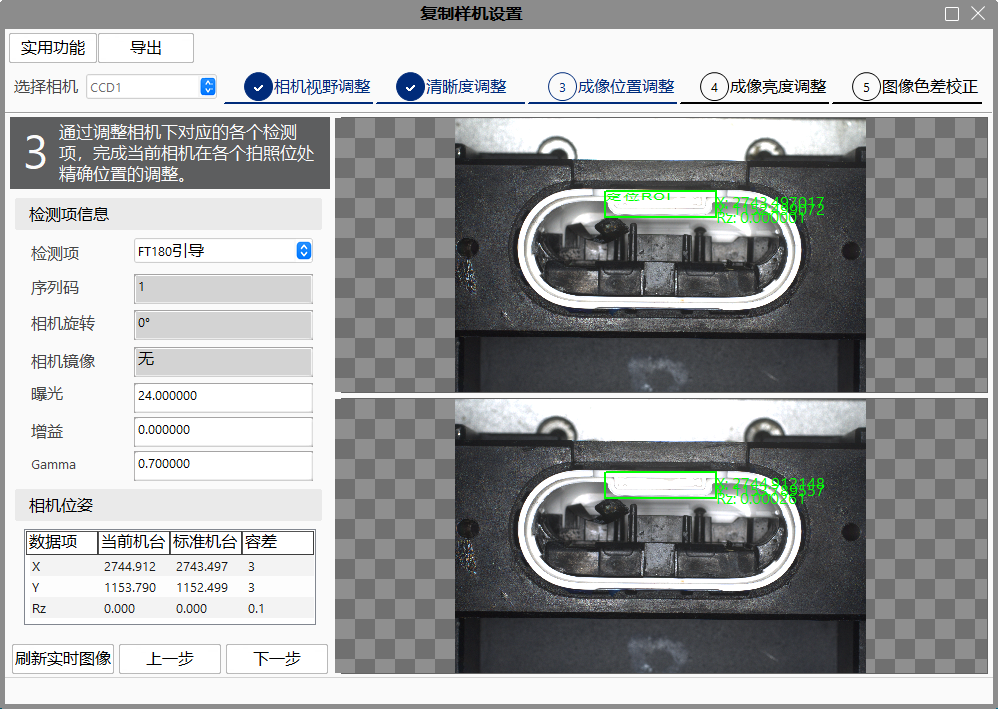
Lưu ý
Trong hình trên, vùng ROI màu xanh lá trong ảnh bên phải là ROI ở cùng vị trí với ảnh bên trái, vùng ROI màu đỏ là ROI định vị thời gian thực (vùng khung đỏ trùng với khung xanh lá).
Hạng mục kiểm tra: Tên hạng mục kiểm tra, do người dùng tùy chỉnh trong giai đoạn “Ghi lại cài đặt mẫu máy”;
Mã số: Mã số sản phẩm, do người dùng tùy chỉnh trong giai đoạn “Ghi lại cài đặt mẫu máy”;
Xoay camera: Xoay ảnh gốc theo chiều ngược kim đồng hồ với các góc 0°, 90°, 180° và 270°;
Gương ảnh camera: Thực hiện gương ảnh đối với ảnh gốc, có bốn chế độ: không, ngang, dọc và cả ngang lẫn dọc;
Phơi sáng: Thời gian phơi sáng của camera, đơn vị: mili giây (ms);
Khuếch đại (Gain): Mức khuếch đại của camera, đơn vị: decibel (dB);
Gamma: Dùng để điều chỉnh độ tương phản của camera;
Tư thế camera: X là giá trị tọa độ trung tâm vùng ROI định vị theo trục X, Y là theo trục Y, Rz là góc quay quanh trục Z theo chiều kim đồng hồ.
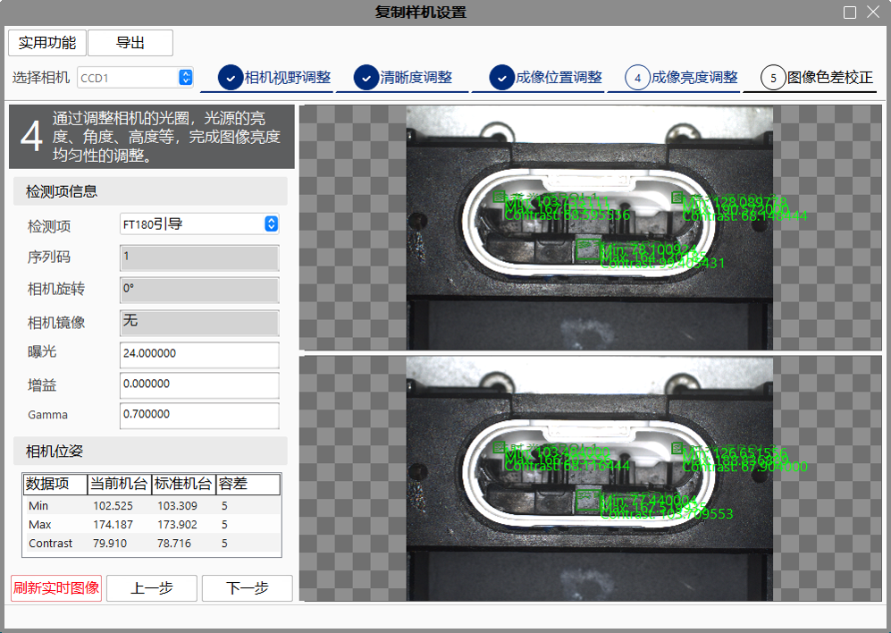
Người dùng có thể chọn chế độ tự động hoặc thủ công để hiệu chỉnh sai lệch màu sắc ảnh giữa máy sao chép và máy mẫu, sau đó lưu kết quả vào camera.
Phương pháp tính trong chế độ thủ công:
1. Thay đổi thủ công tỷ lệ kênh R/G/B;
2. Làm mới ảnh thời gian thực và hiển thị kết quả tính toán.
Trong chế độ tự động:
Nhấn nút “Tính toán” để tự động tính tỷ lệ kênh R/G/B tối ưu.
Nhấn nút “Lưu” trong chế độ thủ công hoặc tự động để lưu tỷ lệ kênh R/G/B hiện tại vào camera.
Danh sách kết quả tính toán: hiển thị kết quả tính toán ảnh thời gian thực.
Lưu ý
Trong vùng hiển thị ảnh đôi, ảnh trên là ảnh chuẩn, ảnh dưới là ảnh thời gian thực. Khi kết quả tính toán của ảnh thời gian thực nằm trong phạm vi sai số tối đa cho phép so với ảnh chuẩn, thông số ảnh thời gian thực sẽ hiển thị màu xanh lá, nếu vượt quá thì hiển thị màu đỏ (quy tắc này áp dụng cho tất cả các giao diện hiển thị vùng ảnh đôi).
Xoay camera: Xoay ảnh gốc theo chiều ngược kim đồng hồ với các góc 0°, 90°, 180° và 270°;
Gương ảnh camera: Thực hiện gương ảnh đối với ảnh gốc, có bốn chế độ: không, ngang, dọc và cả ngang lẫn dọc;
Phơi sáng: Thời gian phơi sáng của camera, đơn vị: mili giây (ms);
Khuếch đại (Gain): Mức khuếch đại của camera, đơn vị: decibel (dB);
Gamma: Dùng để điều chỉnh độ tương phản của camera;
Tư thế camera: X là giá trị tọa độ trung tâm vùng ROI định vị theo trục X, Y là theo trục Y, Rz là góc quay quanh trục Z theo chiều kim đồng hồ.
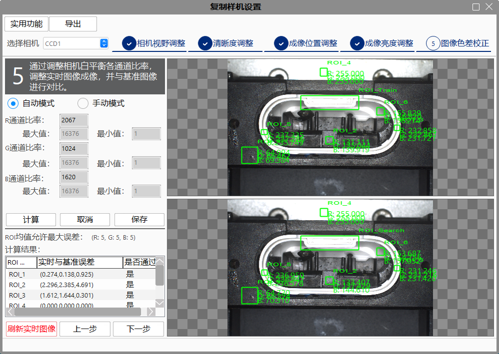
Khi trong dự án không có công cụ thu thập ảnh / công cụ nguồn ảnh (hệ thống đang online), sẽ không thể thêm hạng mục kiểm tra;
Khi phần mềm chưa kết nối với camera, chức năng không thể sử dụng.
Khi nhập dữ liệu mẫu máy vào máy mới, cần đảm bảo số lượng và tên camera kết nối với máy mới khớp hoàn toàn với mẫu máy;
Khi sử dụng đến đèn chiếu, dự án cần có công cụ gửi thông tin truyền thông;
Sau khi nhận diện xong bia mục tiêu, việc thu thập ảnh thời gian thực sẽ dừng lại, cần làm mới thủ công để tiếp tục thu thập ảnh bia mục tiêu; nếu chuyển sang giao diện điều chỉnh sản phẩm, hệ thống sẽ tự động làm mới ảnh;
Khi phần mềm chưa kết nối với camera, chức năng không thể sử dụng.